An immersive heart coherence game where users dive through the five scientific layers of the ocean by sustaining high heart rate coherence. As coherence holds steady, the session descends deeper — from the sunlit surface through twilight, midnight, the abyss, and down to the hadal trenches. These screens document the complete game flow from introduction to completion. Navigation (2026): Play → Ocean opens The Ocean Dive level detail (Drift / Swim / Dive) for the default Epipelagic zone directly — there is no intermediate “Ocean games” list. The zone timeline (Ocean Tide) is reached after a completed ocean session when the user taps Done on Session Complete.
Research-backed examples of rare animals, shells, and pearls by pelagic layer — aligned with the design workbook Sea Animals Shells Pearls.xlsx (synced in ocean-dive-game-design-rationale.md).
The ocean's layers harbour distinct treasures, from the sunlit surface to the crushing depths of the trenches. Below is a comprehensive list of 15 rare animals, 15 unique shells, and 15 precious pearls categorised by the five primary ocean zones.
Source: Sea Animals Shells Pearls.xlsx (HeartMath Game research).
Rarest sea animals
Interesting sea shells
Precious pearls
Rarest sea animals
Interesting sea shells
Precious pearls
Rarest sea animals
Interesting sea shells
Precious pearls
Rarest sea animals
Interesting sea shells
Precious pearls
Rarest sea animals
Interesting sea shells
Precious pearls
Full column dive recording — level flow, active coherence-driven descent through pelagic zones, and session complete.
Play → Ocean opens OceanLevelDetail (title The Ocean Dive) for the Epipelagic zone: orb hero, coherence coaching, Drift / Swim / Dive, Dive In. The Ocean Tide zone list is not the first stop — it appears after Session Complete → Done (see step 5).
Staged pre-session interstitial (copy + per-step decor) → 3 · 2 · 1 countdown → white handoff → active session. Interstitial background: sunlit surface-water cyan–teal gradient (not dark navy).
Maintain coherence to descend; scrolling pelagic backdrop, creatures, shells, HUD, optional finger bubble trail
In-session ? modal — zone facts; standalone OceanZoneInfo — dismiss with Got it!
Session Complete screen opens directly (no zone popup). Stats, zone pill (tap → OceanZoneInfo), new shells/pearls, My Shell Collection entry. Done → Ocean Tide (full zone list + top-bar My Shell Collection gradient orb with white SVG open shell + pearl icon, MyShellCollectionIcon). Sea shell detail uses the same ocean Session Complete gradient; from the collection, Got it! returns to My Shell Collection (stack push, not closing the gallery).
How do you feel now? — five mood faces; My Notes; primary exit is Done (returns to Ocean Tide for ocean theme)
Captured from the HeartMath Wellness App (Expo Go, March 2026). Gallery order matches attached assets images_1 … images_11 — files in docs/screenshots/ as 01-… through 11-….
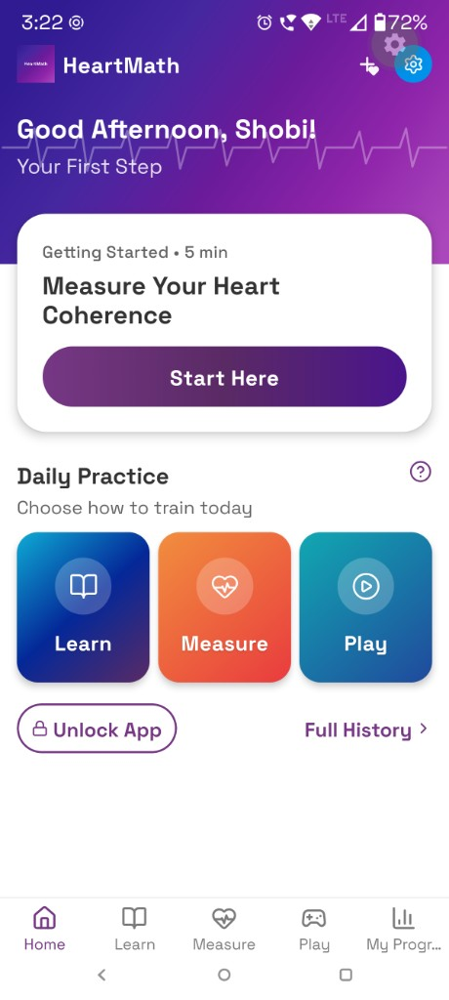
Greeting, ECG line, “Start Here” hero, Daily Practice (Learn · Measure · Play), bottom tab bar
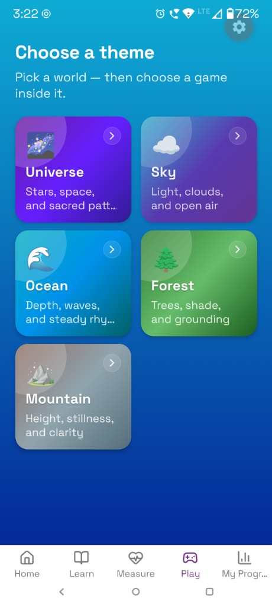
Play tab: Universe, Sky, Ocean, Forest, Mountain — Ocean jumps straight to level detail (Epipelagic · Drift/Swim/Dive), not an intermediate games list
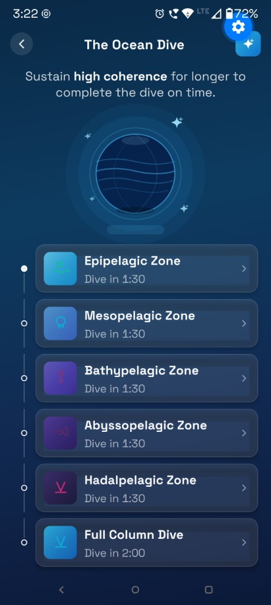
Ocean Tide (top-bar My Shell Collection orb with MyShellCollectionIcon — white line-art bivalve + pearl, react-native-svg · orb hero, timeline, six zones) opens My Shell Collection on tap. Shown when returning via Done after a dive — or when browsing from that hub. First-time entry from Play → Ocean uses screenshot 04 (level detail) instead.
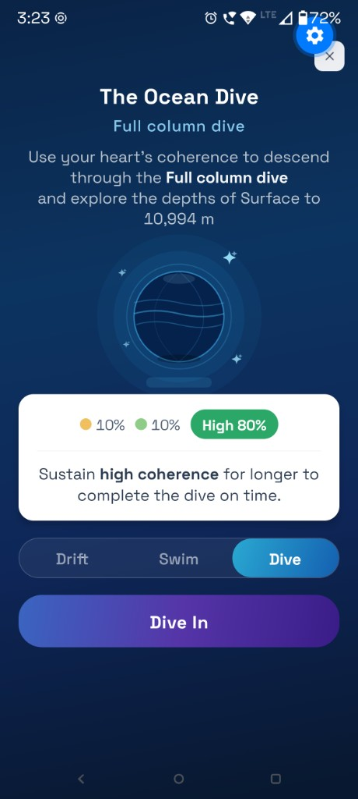
Level detail: title, depth span copy, ocean orb, coherence band row, Drift / Swim / Dive selector, purple “Dive In” CTA
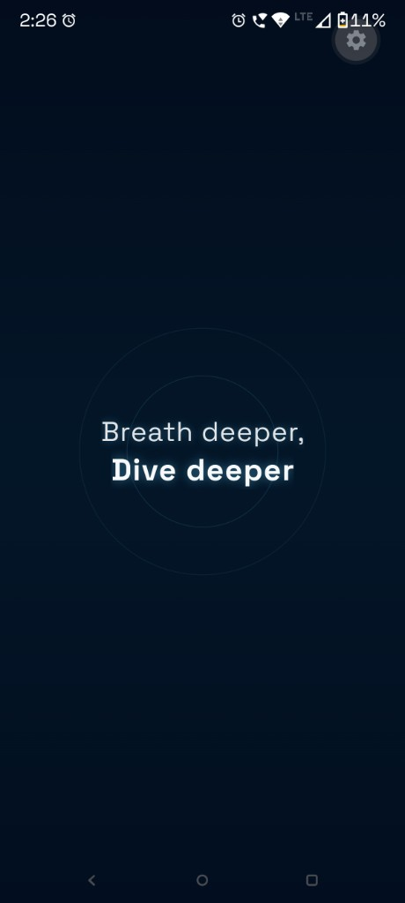
Full-screen sunlit surface-water gradient (cyan → teal → deeper blue-green); staged script lines fade in/out. Background decor per line: floating heart bubbles (heartbeat), NeonCreaturePng session creatures on “Discover sea animals” (RGBA fish + seahorse, same asset system as the swim layer), sequential shell-bubble bursts on the shells line (one bubble at a time, edge bands). Then countdown: digits 3 · 2 · 1 share a fixed ring stage with the circles (optically centred); both rings use slow, sin-eased “ripple” scale + opacity loops (~3.2s / ~4.1s); Game begins sits at the bottom above the safe area. White handoff → session.
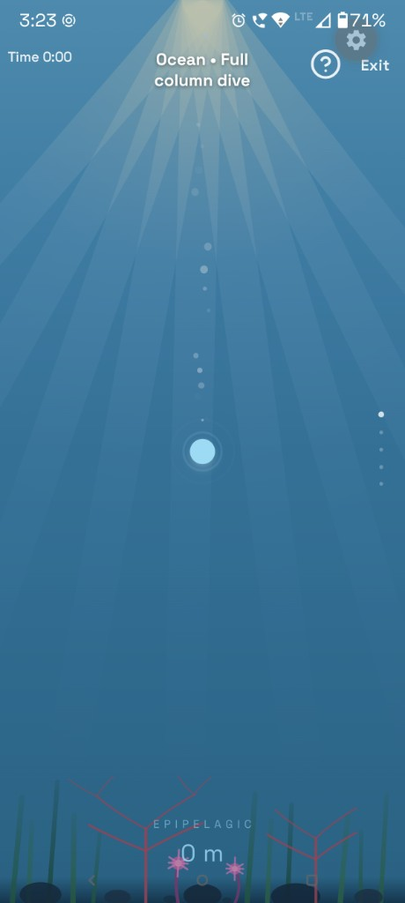
Full column session start: sunrays, central breathing orb, bubbles, seafloor, “EPIPELAGIC · 0 m”, coherence HUD
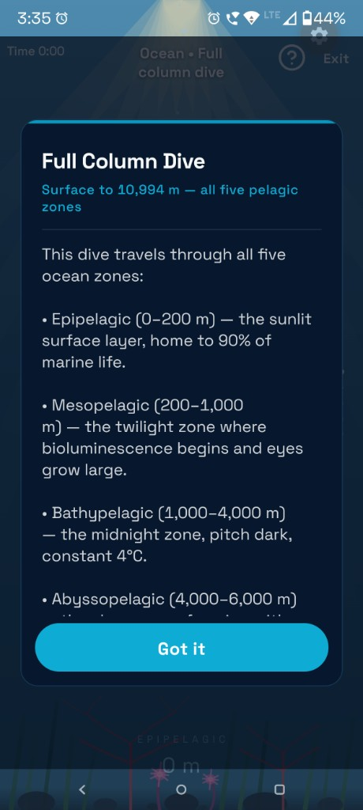
Modal from “?” (example): educational copy for pelagic zones; dismiss control labelled Got it! — same pattern on Ocean Zone Info and session zone popup
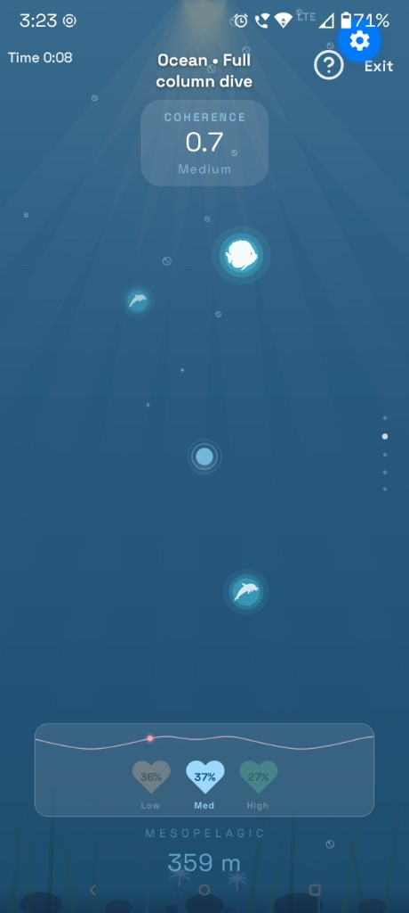
Mid-water: swimming creature halos, depth rail, coherence card, bottom heart-trace + heart pills (~359 m example)
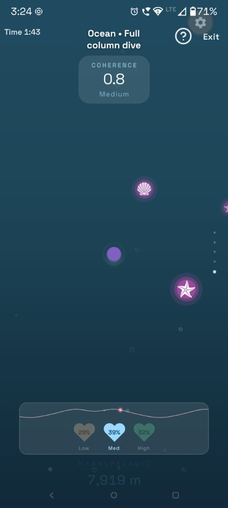
Deep zone: dark water, shell / starfish icons, HRV row, “HADALPELAGIC” + depth (~7,919 m example)
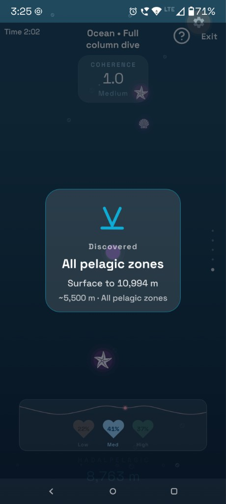
Achievement card: “Discovered · All pelagic zones”, depth span, model depth line — bridge to session end
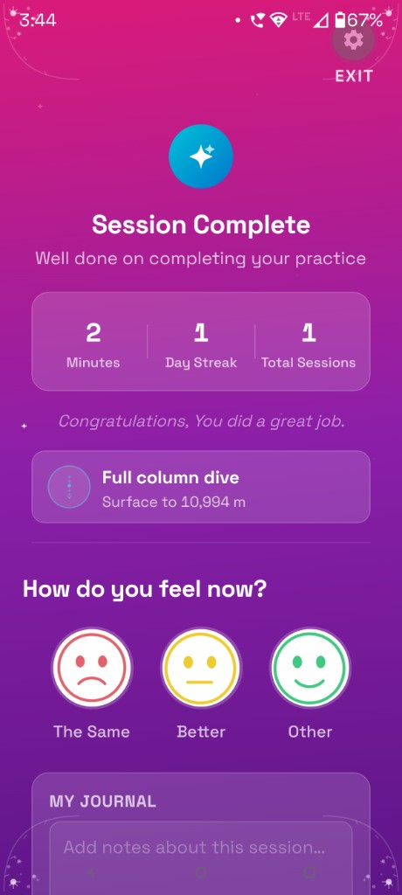
Stats, zone pill (→ Ocean Zone Info), sea-shell / pearl chips, My Shell Collection entry, mood row, My Notes, Done → Ocean Tide. No blocking zone popup on load.
Each ocean layer has a dedicated accent color that runs consistently across every surface — the level card thumbnail, the breathing dot, zone badge, cinematic overlay text, and creature bioluminescent glow.
Complete Ocean Column
Surface to 10,994 m
Sunlight Zone
0 – 200 m
Twilight Zone
200 – 1,000 m
Midnight Zone
1,000 – 4,000 m
The Abyss
4,000 – 6,000 m
The Trenches
6,000 – 10,994 m
The active gameplay screen is composed of six stacked rendering layers that work together to create a convincing underwater environment. Every visual element responds dynamically to the simulated ocean depth.
The full ocean column SVG (surface.svg) scrolls vertically as depth increases, showing the continuous descent from 0 to 10,994 meters
Pelagic tint gradient that darkens progressively with depth, transitioning from bright cyan through blues to total darkness
Gradient animation · Depth-based opacitySunrays with caustic shimmer in Epipelagic, dim blue wash in Mesopelagic, total darkness in deep zones
Animated rays · Caustic patterns · Zone-specificCoral, kelp, anemones, and rocks fade in near the zone floor, providing environmental context and visual variety
Asset placement · Fade-in triggersPhysics-based bubble system with transparent body, specular highlight, and refraction arc. Density inversely proportional to depth
Three-layer rendering · Physics simulation8 RGBA-transparent PNG creature icons in three parallax swim lanes. Each icon is white-tinted (tintColor="#FFFFFF") with zone-coloured concentric glow rings behind it, horizontal swim animation, and sine-wave undulation
8 RGBA-transparent PNG creature icons are distributed across zones based on real-world marine habitats. Each creature appears as a white silhouette over a zone-coloured neon glow halo. Animation includes horizontal swim with direction flipping (via scaleX), sine-wave vertical undulation, a 1,400 ms eased fade in/out, and a triple-ring pulsing glow at 3.2 s independent of swim opacity.
Custom SVG ocean globe with atmospheric glow, pelagic zone bands, meridian grid arcs, polar shimmer cap, and orbiting sparkles
Animated breathing visual with three concentric rings that expand and contract in sync with breathing phases
Easing.inOut(Easing.sin) animationThree parallax swim lanes at different scales and speeds. Each creature is a white-tinted transparent PNG with three concentric zone-coloured View circles behind it forming a neon halo that breathes independently from the swim opacity
glowPulse 0.28 → 1.0 drives ring opacity (4–14 % / 10–30 % / 18–48 %)Easing.inOut(Easing.quad)tintColor="#FFFFFF" on RGBA-transparent PNGs — creature silhouettes appear white against zone glowA compact heart-trace parametric wave rendered in SVG that lives in the bottom HRV widget during the active Ocean session. All three visual properties respond live to the smoothed HRV value, creating an intuitive read of the user's coherence state at a glance
α = 1 − e^(−2.8 × dt)rAF-driven at 60 fpsf(t) = 13·cos(t) − 5·cos(2t) − 2·cos(3t) − cos(4t)Three heart-shaped SVG icons aligned horizontally in the HRV widget, representing Low, Medium, and High coherence tiers. The HRV percentage is displayed inside each heart, and the active tier reflects the current coherence reading
#FFCB9D), activates when score < 0.5#9DD9FF), activates when 0.5 ≤ score < 1.0#6EDDA0), activates when score ≥ 1.0SvgTextSix hand-drawn SVG badge designs representing each pelagic zone, used as post-session reward icons
Dynamic lighting system simulating zone-appropriate light conditions from sunrays to total darkness
SessionRewardsScreen)Five flat vector faces (react-native-svg): Very sad · Sad · The Same · Happy · Very happy — gradient ring when selected
My Shell Collection — full-screen stack route; beach background + teal overlay; Shells / Pearls tabs; 3×5 glass heart grid with mild glitter animation on enter; tap collected shell/pearl → push SeaShellDetail (Got it! pops back to the gallery)
Modal — ShellCollection screen in Play stackOceanLevelDetail (Epipelagic)White vector control on Ocean Tide (and reusable). Open shell with pearl — upper/lower valves, radial ridges, filled pearl — drawn with Path, Line, Circle in a 64×64 viewBox (react-native-svg). color prop (default #FFFFFF) drives strokes and pearl fill for gradients and glass surfaces.
navigate('ShellCollection')myShellCollectionGlyph.js / my-shell-collection-icon.svg) for the in-app CTAassets/my-shell-collection-shell-icon.png may exist as reference art only — not bundled via requireFull-screen achievement layer that sits above the rewards gradient — four corner accents plus 14 floating sparkle particles that continuously animate on the Session Complete screen
SparkleParticle instances at staggered delays (0–920 ms)Animated.spring tension 48 / friction 5Each pelagic zone has a dedicated accent color that creates a consistent visual language throughout the game. The color transitions mirror the actual color spectrum of ocean depth — from bright cyan at the surface through blues and indigos to deep purple-magenta at the trenches.
The entire ocean column is encoded in a single surface.svg file spanning from 0 to 10,994 meters. This approach provides a continuous sense of descent through real ocean geography rather than discrete zone-switched backgrounds, creating a more immersive and scientifically authentic experience.
Three simultaneous creature swim lanes at different scales, speeds, and glow intensities create a genuine sense of underwater 3D space. Each layer also carries a scaled glow multiplier — foreground creatures radiate the strongest bioluminescent halos, making them feel physically closer.
Each creature icon (an RGBA-transparent PNG, white-tinted) floats above three concentric zone-coloured View circles that form its neon halo. All three rings are wrapped in Animated.View components whose opacity is driven by a looping glowPulse value, breathing between 0.28 and 1.0 at 3.2 s independently of the swim opacity — mimicking the rhythmic bio-flash of deep-sea organisms. In zones below 1,000 m where all ambient light is removed, this pulsing glow becomes the only visible light source on screen.
shadowColor or shadowRadius props used — crash-safe on Android New ArchitectureThe Session Complete screen layers an animated celebration overlay — 14 floating sparkle particles and four corner accent ornaments — directly above the session rewards gradient (universe: magenta; ocean: blue–teal). The sparkle badge icon springs in elastically on mount. These micro-animations signal achievement without interrupting the reflective calm of the post-session moment.
Animated.spring tension 48, friction 5pointerEvents="none" — celebration never blocks interactionSession stats and post-session mood check-in are combined on a single ScrollView with one gradient background. This avoids a screen transition at the emotionally resonant moment of completion, keeping the user in a calm, uninterrupted flow state while still capturing feedback.
gradients.gameSessionOcean)Stat tiles and card surfaces use semi-transparent white backgrounds (14% opacity) with slightly more opaque borders (22% opacity). Text sits on these glassmorphic panes rather than directly on the gradient, ensuring legibility across the full range of zone colors without requiring per-zone text color overrides.
rgba(255,255,255,0.14) backgroundsrgba(255,255,255,0.22) bordersThe heart-trace wave in the bottom HRV widget is not merely decorative — all three of its visual properties respond continuously to the smoothed HRV score. This creates an immediate, intuitive read of the user's physiological state without requiring them to interpret numbers: a tall, broad, slow wave signals coherence; a flat, tight, rapid wave signals a need to breathe more deeply.
The speed of descent and the ultimate depth reached during a session are directly and visibly proportional to the user's coherence score. A narrow flat mapping is replaced by a wide proportional range — low coherence barely moves the ocean, while high coherence carries the diver all the way to maximum depth with time to spare. This creates genuine stakes: the ocean itself becomes a biofeedback display.
t = (score − 0.15) / 1.3, then factor = 0.05 + t × 1.35diveDriveProgress signalAll zone names, depth boundaries, temperature data, pressure values, and creature examples match peer-reviewed oceanographic sources (NOAA zone definitions). The depth counter shows actual modeled depth in meters, grounding the fantasy of "diving" in real scientific data and creating educational value.
React Native Animation: All creature movements, bubble physics, breathing dot, sparkle particles, and badge spring-in use React Native's Animated API with easing functions (Easing.inOut, Easing.sin, Easing.quad, Animated.spring) for smooth, organic motion throughout.
Creature Icon System: Creature icons are RGBA-transparent PNG files (colorType 6, verified via PNG IHDR inspection). tintColor="#FFFFFF" colours only the non-transparent silhouette pixels, leaving the background fully clear. Three concentric View circles behind the image carry the zone tint colour and are animated via glowPulse.interpolate() — avoiding any shadowColor / shadowRadius usage that crashes on Android New Architecture. The scaleX direction flip lives in a plain View wrapper, never mixed with the native-driver animated translateX / translateY.
Pre-session overlay (OceanAnalyzingInterstitial): Background is a sunlit epipelagic-style linear gradient (lighter cyan–teal toward the top), not a dark navy fill. After the script, the countdown renders rings only in this phase (not over the script lines). Rings and digits sit in the same 260×260 box so the number stays aligned with the circles; lineHeight matches fontSize and Android includeFontPadding: false reduce baseline drift. Two independent Animated loops drive outer vs inner ring scale and opacity for a slow ripple; ring strokes use slightly stronger white borders on the brighter background. useSafeAreaInsets() pads the Game begins caption. Decor layer (OceanAnalyzingInterstitialDecor): reuses exported NeonCreaturePng for the sea-animals step; shell emojis spawn in a queue (next shell after the previous burst completes + gap), not on a fast interval.
Navigation: playThemes.js has no ocean entry under GAMES_BY_THEME_ID — Ocean is not a “games list” theme. PlayThemesScreen navigates to OceanLevelDetail with levelId: 'epipelagic', durationSec: 90. OceanTideScreen is pushed from SessionRewardsScreen when the user taps Done after an ocean session. The Ocean Tide top bar uses MyShellCollectionIcon (inline SVG, not PNG tintColor) for the collection entry. SeaShellDetailScreen shares the ocean Session Complete gradient (gradients.gameSessionOcean).
HRV-Synchronized Wave: HrvWaveStripHeart runs a requestAnimationFrame loop that advances the wave phase and exponentially smooths the HRV target each frame. Both heartTracePath() and heartTraceYAtX() receive the live smoothed HRV value and derive amplitude (height × (0.18 + 0.32 × hrv)) and cycle count (2.2 − hrv × 1.0) on every frame, making the wave shape a real-time biofeedback display.
Coherence-Driven Dive: The 50 ms session ticker normalizes scoreRef.current to a 0–1 range and maps it to a coherenceFactor of 0.05–1.40. This drives coherenceDiveProgressRef, which in turn controls the background scroll position, depth meter, bubble density, creature zone selection, pelagic tint, lighting strength, and cinematic overlay — all through a single diveDriveProgress value.
Performance Optimization: All six visual layers use useNativeDriver: true. Creature spawning reads depthMRef.current inside stable useCallbacks, preventing animation restarts on every depth tick and maintaining 60 fps on mid-range devices.
SVG Architecture: Decorative elements (badges, hero orb, corner accents, sparkle particles, breathing dot, HRV wave, heart pills, My Shell Collection CTA on Ocean Tide) are inline SVG components. Creature icons are RGBA-transparent PNGs, reducing complexity while keeping the asset footprint small — no @2x/@3x variants needed for the creature set.
Celebration Layer: The CelebrationOverlay uses StyleSheet.absoluteFill with pointerEvents="none" so it renders above all content without blocking any touch events. Each SparkleParticle manages its own animation loop via a recursive closure, keeping the particle system self-contained and easy to tune.
Accessibility: Despite the rich visual language, all interactive elements (level selection, mood faces, buttons) maintain adequate contrast ratios and carry screen reader labels for vision-impaired users.